智能电视漏洞挖掘初探之Getshell
智能电视漏洞挖掘初探之 Getshell
上周发了一篇智能电视历史漏洞的文章，这周来分享一下智能电视的攻击点以及怎么上手。智能电视不仅仅是用来看电视的，也可以是智能家居的枢纽。电视不是单独的存在，还能与手机、智能家居进行互动。正是由于应用场景的不断拓展，安全问题也逐渐显露。想象一下“ 你在看电视，电视却在看你 ”的诡异画面。曾有新闻报道，自己家电视的播放不受控制，莫名其妙的播放了一些奇奇怪怪的东西。这是怎么一回事儿呢，我们首先来了解一下电视。
一般人很少全面的了解智能电视，一般就用刷刷剧，其中有不少人甚至不会用 DLNA 投屏服务。下面来看看，在挖掘智能电视漏洞之前需要了解的基础信息。
很多人天天使用电视，却不知道电视使用什么系统。知道采用什么系统，心里就有最基本的方向了。智能电视使用的操作系统有 Android、WebOS、Tizen、TV OS(IOS)等。
Android：国内主流使用的电视操作系统，应用生态丰富，各大电视厂家进行了深度定制。
WebOS: LG 电视使用 WebOS 操作系统，WebOS 以 Linux 内核为主体并加上专有转件的操作系统，几经转手现在归 LG 旗下。
- Tizen: 三星电视使用 Tizen 操作系统，同样基于Linux。Tizen 系统是英特尔 MeeGo 系统与三星 LiMo 系统整合而来的。
- TV OS(IOS): APPLE TV 使用的操作系统，由 IOS 分化而来，国内极少见。
话说，还有华为鸿蒙，暂时还没有碰过，这里就不讨论了，哪位大大，能赞助一台华为智慧屏，咱们就来仔细聊聊。于国内而言，几乎一色的深度定制 Android 系统。下面我们就来看看采用 Android 系统的电视的漏洞挖掘。
信息收集
漏洞挖掘的第一步都是信息收集，需要对设备进行摸底，收集各类信息，设备架构、操作系统、外设、各类服务、供应链等。其中有不少的重要消息可以从互联网上找到。
同一家的智能电视往往有很多共通之处，互联网上可以找到很多东西，如 “如何安装第三方应用”、“工程模式”、“怎么开启 ADB调试”、“如何进入Recovery模式” 等。
第三方应用安装：电视内置的应用商店提供的应用都不太多，如果有个性化的需求，需要安装第三方的应用。怎么安装第三方应用呢。当下你肯定不是第一个有需求的人，上网搜一搜，很多电视的第三方应用安装方法就出来了。其中欢视网就提供了主流品牌电视的第三方应用安装方法，新兴的小众品牌可以到论坛去找。
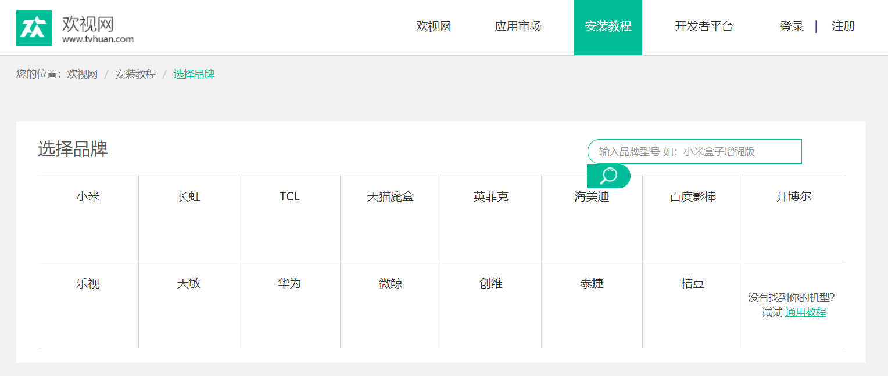
当贝市场 也提供第三方应用安装方法。
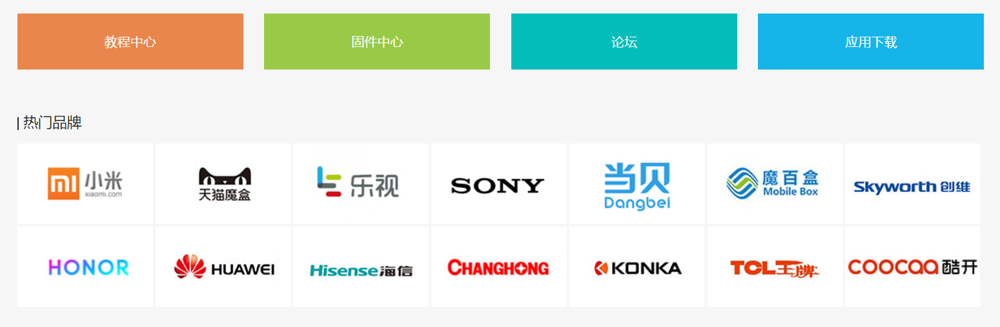
沙发管家 也提供第三方应用安装方法。
通用的方法是，将第三方应用下载到 U 盘，插入到电视上进行安装。直接安装可能无法安装，有的需要开启文件管理器 APK 显示，有的要开启允许未知应用安装。
欢视网、当贝市场等只涉及国内，没有国外电视工程模式进入的方法。国外电视可以在 Category:Service Menu - Factory-Reset.com 以及 Hard Master Reset 上查询。上面不但有进入工程模式的方法，还有进入 Recovery 和本地刷机的方法。
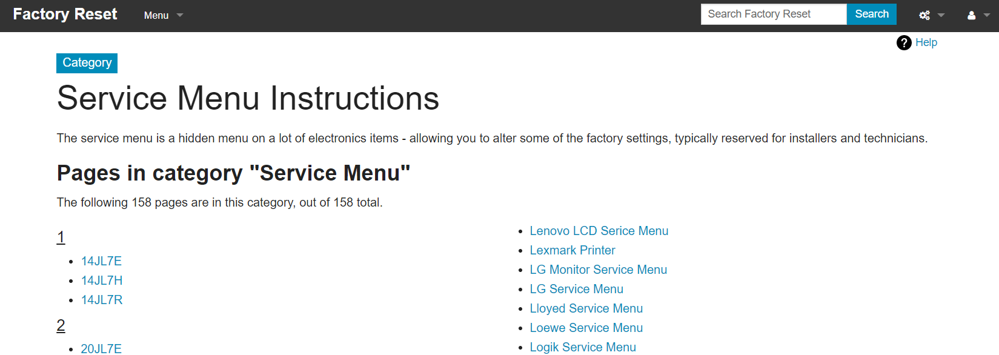
工程模式：与 Android 手机一样，电视也是有工程模式的。通过特殊的组合按键可以进去隐藏的工程模式。这里可以查看设备基本信息、设置系统参数等。以下是网络上收集的一些电视工程模式的进入方法。
长虹电视
- 新款带语音的遥控器：按【菜单键】后，当焦点移至 “情景模式” 下的 “标准模式” 菜单上时，按【上、右、右】组合键，弹出数字软键盘，当输入【0 8 1 6】进入工厂菜单。
- 带数字按键的遥控：按电视遥控器的【节目源键】，把信号调节到 HDMI，按遥控器 【菜单键】 然后左侧出来菜单栏后，依次按数字键【 0 8 1 6】，然后，就进入工厂模式 了。
TCL电视：将【音量】减到0，调出“主菜单”, 光标移至”对比度”并点击【确定键】；在 2 秒内迅速按数字键【9 7 3 5】可进入工厂模式。
小米电视：在系统菜单中进入“设置”-> “关于” -> “联系客服”；在 “联系客服” 界面继续按住遥控器的 【下方向键】，即可看到 工厂模式 的入口。
海信电视：按下遥控器的【菜单键】，在菜单键中选择“声音设置”，再之后选择平衡选项，输入0532，完成之后，即可进入到海信电视的工程模式。
创维酷开电视：打开系统设置页面，进入到本机“详细信息”；遥控器依次按下【上上下下左右左右】方向键，就可以进入工程模式了。
索尼电视：开机播放有线电视节目，按遥控器上【电源/待机键】，进入待机，然后依此按下 遥控器上的【屏显】、【5】、【音量+】、【电源/待机】，后进入工程模式。
乐视电视：首先“开机” -> “主页” -> 按遥控器上数字键 【2580】，即可进入工程模式。
三星电视：将电视进入待机状态，依次按下遥控器上的【显示键】、【项目键】、【静音键】、【电源键】，即进入工程模式，关闭电源就可以退出工程模式。
- 康佳电视：按一下菜单按钮，画面弹出普通功能设置菜单。这时连续点按5次“回看”按钮，即可打开康佳电视工厂模式菜单。
ADB : 一般在 “工程模式” 或 “开发者模式” 中开启 ADB 调试功能，甚至有点的智能电视直接默认开启了 ADB。
Recovery 模式：Android 电视也有 Recovery 刷机模式，下面是一些电视的 Recovery 模式的进入方法。
- 创维：断电再重新通电的同时连续点按遥控的上键（I71和I71C、A818/A818C是点按遥控的左键），即可进入Recovery模式。
- 华为盒子: 先将盒子关机，然后开机，在开机时开始一直按遥控器的【菜单键】和【音量-】（不停点按两个键，不是长按），就会进入Recovery 模式。
- 小米：开机中，同时按住遥控器上的【主页键】和【菜单键】，机器进入Recovery 模式。
- 其他：有的还有像手机一样，开机按【电源键】和【音量-】进入 Recovery 模式，另外值得注意的是有些电视可以在 “工程模式” 中选择进入Recovery 模式。
其他信息：如固件包等。
拆箱
收到电视，当然是最爱的拆箱环节，自己动手组装电视。组装之前，最好看一遍 “用户手册” ，看一看电视有哪些接口，遥控器的使用说明以及其他信息。
接口，电视上一般有音频输入输出接口、网口、HDMI、USB、天线等。当然也可以直接看电视上的接口。
遥控器，一个遥控器有什么好看的，谁还不会用啊？现在电商厂商玩的越来越花了，遥控器上除了红外，有的还有蓝牙和 NFC。看一下用户手册，了解是否有什么不常见的新功能以及如何使用。
建立热点
开机之后先不要忙着连接 Wi-Fi ，建立一个热点，抓取初次连接的数据包。运气好的话，可以抓到明文传输的升级包以及设备激活信息。以下是某电视升级包的下载请求。

了解业务
查看系统中有哪些内置应用，重点关注电视厂商自己的应用。如系统设置、投屏服务、智能家居联动服务等。
威胁建模
对智能电视有整体的了解后，就到了威胁建模的阶段。
硬件安全
拆机调试接口（串口）是否封闭，是否存在授权等。
Flash 是否容被提权。
ADB 调试
电视都有 ADB 调试，如何开启 ADB。
通信安全
重要数据是否明文传输。特别是OTA，能否从 OTA 获取升级包地址，升级包能够被替换。此外有的遥控器也是有OTA的，这是容易被忽略的。
蓝牙可能存在 nday。
电视与其他终端的交互安全
电视与手机、IOT等设备之间的交互，这一类一般采用私有协议。其中存在隐私泄露、拒绝服务、服务被滥用等威胁。
系统以应用安全
越权、命令执行、缓冲区溢出、敏感信息泄露等。
从端口扫描到提权
利用端口扫描发现对外开放的服务，并利用之前收集的信息获取 ADB 权限，开始智能电视漏洞挖掘之旅。
分析对外开放的服务
智能电视是一个大屏手机，与手机不同的，电视会开放一些端口用于和其他设备交互，手机默认是不会开放端口的。通过端口扫描查看电视对外开放的端口，分析电视对外开放的开放服务。
比如 TCL 某型号电视就默认就开启了 ADB。adb connect ip:5555 就能拿到交互式 shell，这对后续的分析很有帮助。
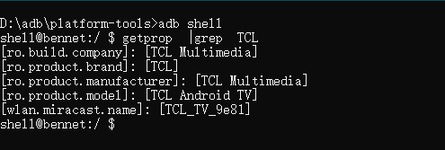
此外，还有 7983 端口，直接访问这不明显是目录遍历么。
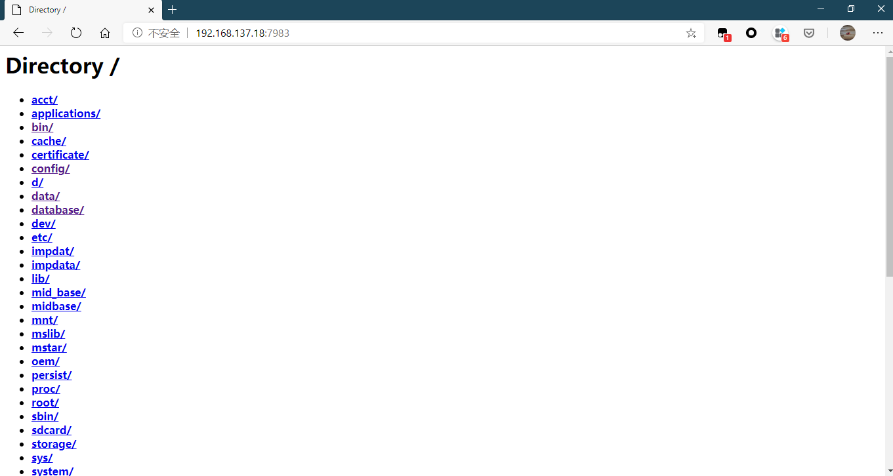
调试入口
对外开放的端口看完了，此时可能已经发现了一些问题，目录遍历、ADB等。但有些端口，直接是看不出来用途的，这时候需要进入系统去看端口对应的服务。
如果运气好的话，开放了 ADB 可以直接连。如果没有就可以尝试上面提到的进入工程模式的方法，去找 ADB 开启选项是否在里面。
例如，创维的某款电视，在设置进入本机信息后，在此界面按 上上下下左右左右进入工程模式。在进入工程模式之后，选择通用设置，进入后可以打开 ADB 调试。
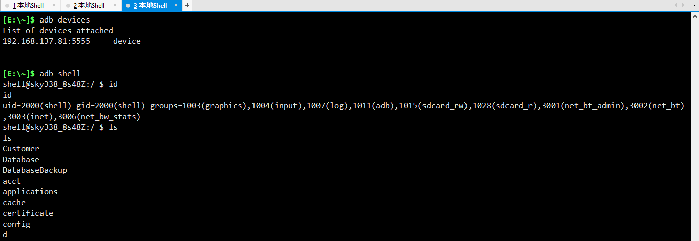
提权
有了 ADB 之后，去看监听端口的服务时，发现程序名为 -。其实这是权限的问题，普通用户查看，此时我们需要提权。
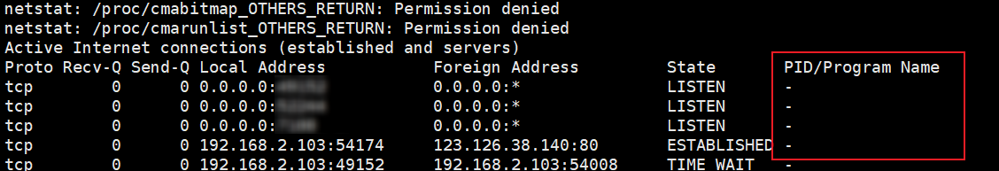
Android 提权，分析系统中的应用，利用应用缺陷来提权。这一步至关重要，要 hook 应用等都需要 Root 权限。提权还是很费时间的，但是有的电视自带提权应用。TCL 就是其一，使用 tclsu就能从 shell 用户切换到 root 用户。
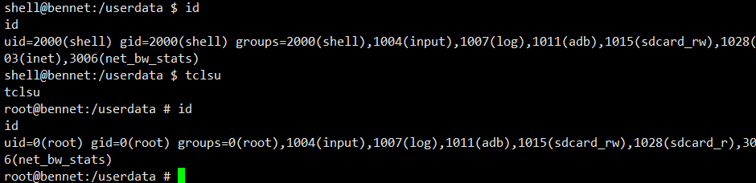
另外，如果 Android 版本比较低的话可以用 Root 工具提权。
到这里，就拿到了系统的 Root 权限，随后就可以深入的挖掘电视的漏洞了。
没有ADB但可以安装任意应用
一切不可能这么顺利，有的电视 ADB 调试开关藏得就是很深，就是找不到，但是可以安装任意 APK 。这种情况下，可以安装神器 Termux，这不就有了一个 shell。后续可以把 /system 目录下的文件拖下来分析嘛。
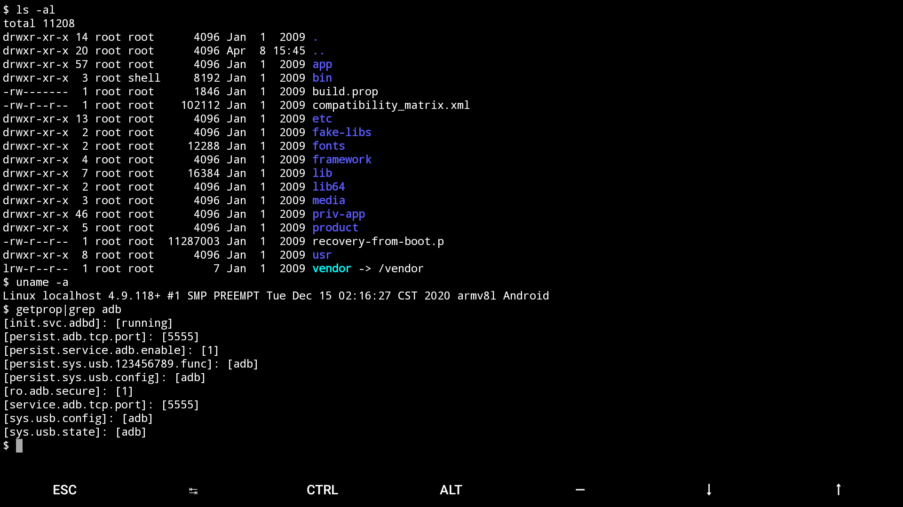
既没有ADB也不能安装任意应用
不少也是预留有电视串口的，只是有的默认开启，有的需要在工程模式中打开。
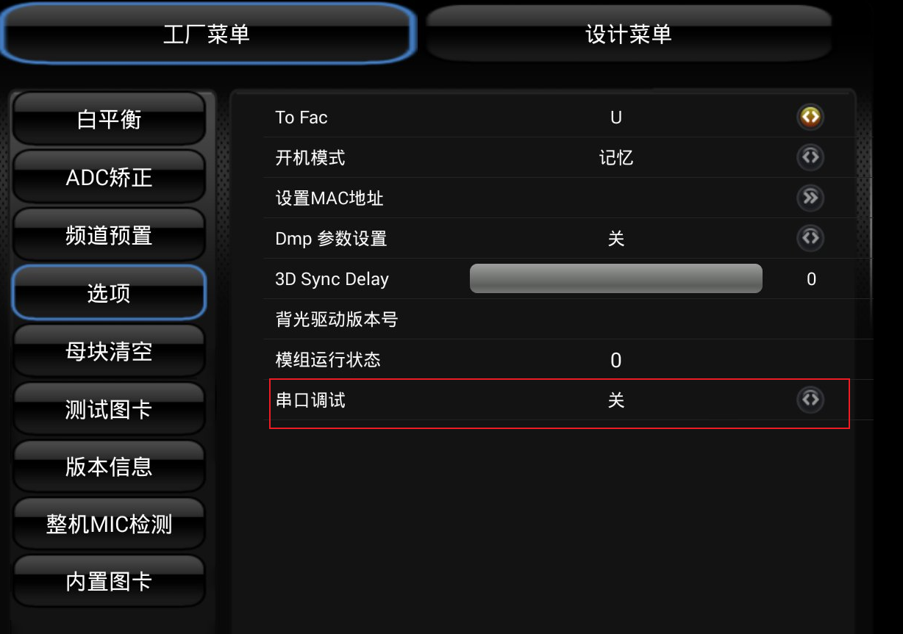
串口进入一般是没有认证。
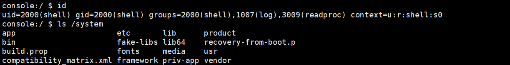
再者，这些都不行。那就要一步一步的突破，想办法开启 ADB 调试或安装第三方应用，针对实际情况采取不同手段了。
总结
本文是智能电视漏挖掘的入门文章，从信息收集到 Getshell，但这只是漏洞挖掘的起点，更多的需要对APK、Native程序、乃至对 Android 系统底层的深入研究。
后面有机会的话和大家分享漏洞挖掘的一些细节，敬请关注。点赞超过 20 ，更新”下一集”。